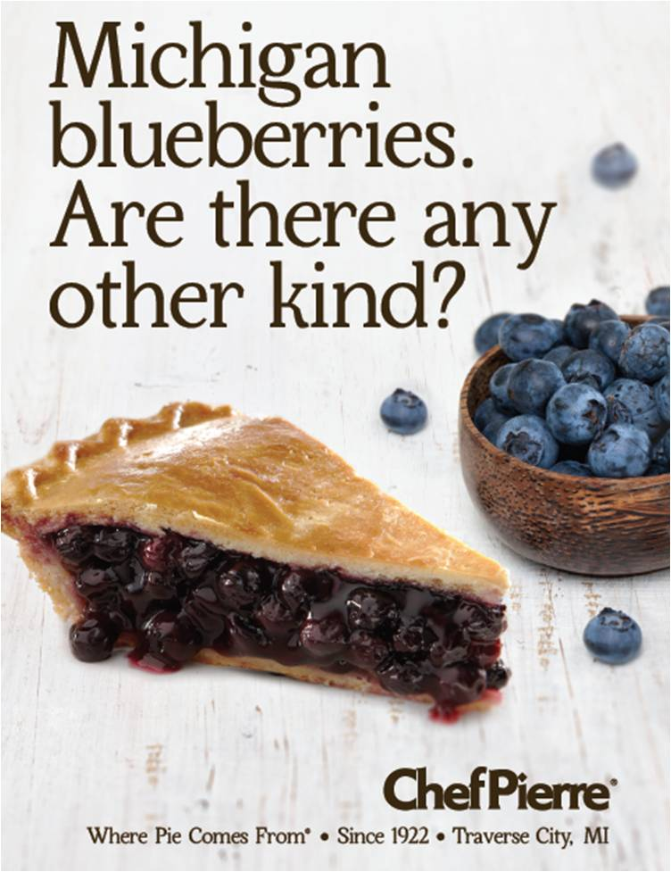
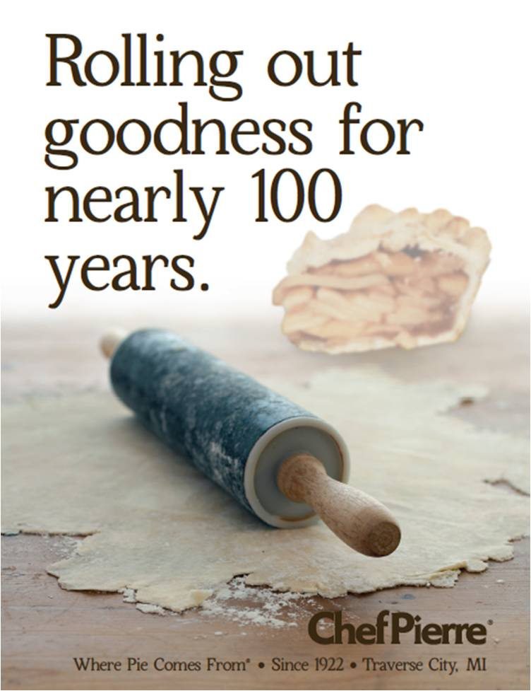

Please read the following statement about the CHEF PIERRE brand carefully. When you’re done reading, please click next.
Founded in 1922, Chef Pierre® pie company has been dedicated exclusively to creating high quality pies for nearly 100 years.
Located in the heartland of America in Traverse City, Michigan, we are proud to locally source much of our fresh, delicious fruits as well as employ local, hard-working folks who help us bake today’s most delicious and time-honored pie offerings.
Board A

Board A
Board B
Board C

Board D
